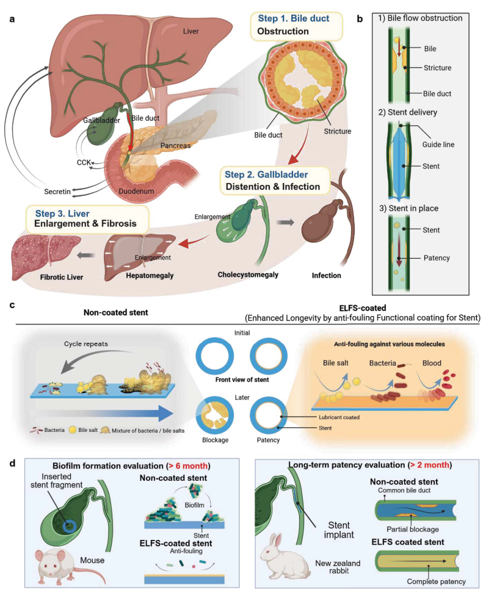

Research context and placement
The lubricated biliary-stent coating targets adhesion, biofilm and immune fibrosis; the neutrophil pathway is an immune connection within the same host theme.
Research background
Biliary stent dysfunction can involve attached material, biofilms, deposits and host foreign-body responses. ELFS changes the contact surface to a lubricated interface. Fouling and inflammation may interact, but reducing one is not identical to demonstrating a reduction in the other.
Approach and advances
The design combines polydopamine-based anchoring with a fluorinated lubricating interface to discourage direct attachment. Its purpose is to preserve a functional stent interface. It should not be recast as a bactericidal treatment or elimination of every foreign-body response.

ELFS biliary-stent interface design, occlusion problems and preclinical evaluation layout.
Tae Young Kim, Won-Jong Lee, Yurim Lee et al.. “Slippery dopamine–fluoropolymer hybrid surface for improving biliary stent longevity”. Figure 1. DOI: 10.1016/j.bioactmat.2026.02.003. CC BY 4.0. Public original image copied byte-for-byte, with no resizing, cropping, annotations or re-encoding.
Source figure and caption ↗ · DOI: 10.1016/j.bioactmat.2026.02.003 ↗ · CC BY 4.0 ↗
Evaluation and conditions
Early immune dynamics were observed intradermally in dorsal skin, with a separate subcutaneous biocompatibility test. Mouse-gallbladder fragments assessed fouling, whereas rabbit common-bile-duct stents assessed patency. Four rabbits per group and these distinct anatomical settings cannot be pooled into a clinical patency rate.
Key findings
After six months in mouse gallbladders, ELFS fragments showed less bile sludge and biofilm-like accumulation than uncoated fragments. In the separate two-month rabbit common-bile-duct test, flow was blocked in uncoated stents but maintained through ELFS stents. These complementary observations remain distinct in anatomy, duration and endpoint.
Limits and open questions
Fluorine on retrieved stents may reflect the underlying PFP scaffold rather than retained lubricant. Lubricant depletion and persistent surface function must therefore be separated. Correction DOI 10.1016/j.bioactmat.2026.03.015 adds acknowledgements and states that conclusions are unaffected, rather than correcting experimental outcomes.
Related external research
A bioinspired omniphobic surface coating on medical devices prevents thrombosis and biofouling
Relative to blood-contacting liquid coatings, ELFS examines bile ducts and immune–fibrotic pathways.
Thrombosis, biliary sludge and host fibrosis have distinct conditions and endpoints.
Abstract checkedCorresponding-author verification
Jungmok Seo: corresponding authorThis record concerns Jungmok Seo’s correspondence designation. Author order or an asterisk alone is not treated as confirmation; this check is separate from verification of the research content.
- Correspondence evidence source ↗
Jungmok Seo → cor2; Corresponding author.
front/article-meta/contrib-group and author-notes; name-to-corresp reference and email · public_repository_xml_read
- Main-text review scope
- Read DOI/title-matched public Europe PMC XML Abstract, §2.3, §2.5–2.7, §3, §4.18 and §4.20. Rechecked §2.5, §4.14 and §4.15 to separate intradermal immune imaging from subcutaneous biocompatibility. The funding-only correction was also read. Direct publisher-web full text remains distinct. Also read §2.2 directly for PDA–PFP anchoring and lubricant infusion.
- Supplementary review scope
- Supporting information was not comprehensively read. A main-text citation to supplementary results does not count as direct inspection of those results.
- Pending verification
- Public repository text was read. Cross-check the publisher version, supplements and lubricant-retention measurements in school Chrome. Correction DOI 10.1016/j.bioactmat.2026.03.015 adds omitted funding for #91; figure corrections concern other articles in that notice.
COVERAGE & OUTREACH
Coverage and outreach
Links are checked for their relationship to this paper. Media publication does not establish independent reporting or additional experimental validation.
Device–tissue interfaces: prior studies, ELFS biliary stents and FLUID ureteral stents ↗
The post describes the ELFS biliary-stent study in Bioactive Materials. DOI 10.1016/j.bioactmat.2026.02.003, documented as the destination of the in-body shortened link, matches the title and DOI of #91 in the public 101-paper catalogue.
Body read Based on a verification record documenting the post body, “Worldwide” visibility and DOI destinations of six shortened links in a logged-in session. The publication date was determined from the “4 hours” display observed at 22:37 KST on 2026-10-03; the exact publication time remains unverified. DOI destinations were checked on LinkedIn’s external-link notice screens; this does not represent a new review of publisher full text. This is researcher-authored promotion, not independent reporting or additional experimental validation.
Sources and verification scope
Read DOI/title-matched public Europe PMC XML Abstract, §2.3, §2.5–2.7, §3, §4.18 and §4.20. Rechecked §2.5, §4.14 and §4.15 to separate intradermal immune imaging from subcutaneous biocompatibility. The funding-only correction was also read. Direct publisher-web full text remains distinct. Also read §2.2 directly for PDA–PFP anchoring and lubricant infusion.
The additional commentary is editorially approved within the stated evidence scope. This does not imply complete verification of all main-text and supplementary material.
- Additional main-text review scope
- Read DOI/title-matched public Europe PMC XML Abstract, §2.3, §2.5–2.7, §3, §4.18 and §4.20. Rechecked §2.5, §4.14 and §4.15 to separate intradermal immune imaging from subcutaneous biocompatibility. The funding-only correction was also read. Direct publisher-web full text remains distinct. Also read §2.2 directly for PDA–PFP anchoring and lubricant infusion.
- Additional supplementary review scope
- Supporting information was not comprehensively read. A main-text citation to supplementary results does not count as direct inspection of those results.
- Public publication baseline ↗ · #91 · 2026-10-03
- Crossref metadata ↗: Only public bibliographic metadata registered with Crossref was checked. This does not mean that the publisher page, abstract, or full text was read; full-text verification in the school Chrome session remains pending. license_urls lists registered links and does not establish permission to redistribute text or figures. It may include TDM or posting-policy links.
- Slippery Dopamine–Fluoropolymer Hybrid Surface for Improving Biliary Stent Longevity ↗
PubMed_abstract_via_Europe_PMC_API · MED/41732674; DOI 10.1016/j.bioactmat.2026.02.003; abstractText actually read via Europe PMC core API; abstractText, title and doi checked 2026-10-03. - Slippery Dopamine–Fluoropolymer Hybrid Surface for Improving Biliary Stent Longevity ↗
publisher_direct_access_failed · HTTP 403; PMC HTML browser check; publisher full text not read; public Europe PMC XML read separately on 2026-10-03 - Corrigendum for figure-related and funding acknowledgement corrections in previously published articles of Bioactive Materials ↗
public_PMC_correction_full_text · DOI 10.1016/j.bioactmat.2026.03.015; opening paragraph; #91 item p0120–p0140: funding acknowledgements only; public PMC HTML read 2026-10-03. - A bioinspired omniphobic surface coating on medical devices prevents thrombosis and biofouling ↗
public_external_abstract · Abstract and DOI metadata; read 2026-10-03. - Slippery Dopamine–Fluoropolymer Hybrid Surface for Improving Biliary Stent Longevity ↗
public_repository_full_text · HTTP 200 JATS XML; PMID 41732674; DOI 10.1016/j.bioactmat.2026.02.003 matched; abstract, sec2.3, sec2.5–2.7, sec3, sec4.18, sec4.20 actually read 2026-10-03; mouse gallbladder versus rabbit common-bile-duct models distinguished - Slippery dopamine–fluoropolymer hybrid surface for improving biliary stent longevity ↗
public_repository_selected_full_text_read · Abstract; §2.3; §3 Conclusion - Slippery dopamine–fluoropolymer hybrid surface for improving biliary stent longevity ↗
public_repository_selected_full_text_read · §2.2 Fabrication process: PDA adhesion, anchored PFP framework and lubricant swelling; §2.3; §3 Conclusion - Slippery dopamine–fluoropolymer hybrid surface for improving biliary stent longevity ↗
public_repository_selected_full_text_read · §2.5; §4.14 intradermal imaging; §4.15 separate subcutaneous biocompatibility; §2.6–2.7; §4.18 and §4.20 - Slippery dopamine–fluoropolymer hybrid surface for improving biliary stent longevity ↗
public_repository_selected_full_text_read · §2.6 Long-term biofilm formation in a mouse model, Fig. 6; §2.7 rabbit patency, Fig. 7 - Slippery dopamine–fluoropolymer hybrid surface for improving biliary stent longevity ↗
public_repository_selected_full_text_read · §2.7 final paragraph: fluorine attributed more likely to PFP scaffold; lubricant depletion under bile shear; official correction separately linked - Slippery dopamine–fluoropolymer hybrid surface for improving biliary stent longevity ↗
public_PMC_correction_full_text_read · DOI 10.1016/j.bioactmat.2026.03.015; opening paragraph and #91 item p0120–p0140: funding acknowledgements only; conclusions unaffected - Slippery dopamine–fluoropolymer hybrid surface for improving biliary stent longevity ↗
independent_reviewer_selected_main_text · DOI/title, Abstract, §2.1–2.3, §2.5–2.7, §3, §4.14–4.15, §4.18, §4.20; §2.5 reread separately after output truncation - Correction notice concerning the biliary-stent study (#91) ↗
independent_reviewer_selected_main_text · opening paragraph p0010 and #91 correction item p0120–p0140 - Additional commentary source ↗
Research background · Abstract; §2.3; §3 Conclusion · public_repository_selected_full_text_read - Additional commentary source ↗
Approach and advances · §2.2 Fabrication process: PDA adhesion, anchored PFP framework and lubricant swelling; §2.3; §3 Conclusion · public_repository_selected_full_text_read - Additional commentary source ↗
Evaluation and conditions · §2.5; §4.14 intradermal imaging; §4.15 separate subcutaneous biocompatibility; §2.6–2.7; §4.18 and §4.20 · public_repository_selected_full_text_read - Additional commentary source ↗
Key findings · §2.6 Long-term biofilm formation in a mouse model, Fig. 6; §2.7 rabbit patency, Fig. 7 · public_repository_selected_full_text_read - Additional commentary source ↗
Limits and open questions · §2.7 final paragraph: fluorine attributed more likely to PFP scaffold; lubricant depletion under bile shear; official correction separately linked · public_repository_selected_full_text_read - Additional commentary source ↗
Limits and open questions · DOI 10.1016/j.bioactmat.2026.03.015; opening paragraph and #91 item p0120–p0140: funding acknowledgements only; conclusions unaffected · public_PMC_correction_full_text_read - Additional commentary source ↗
Connections to related work · §3 Conclusion; external abstract · public_repository_selected_full_text_read - Additional commentary source ↗
Connections to related work · A bioinspired omniphobic surface coating on medical devices prevents thrombosis and biofouling; DOI 10.1038/nbt.3020; previously verified Abstract · public_external_abstract_read